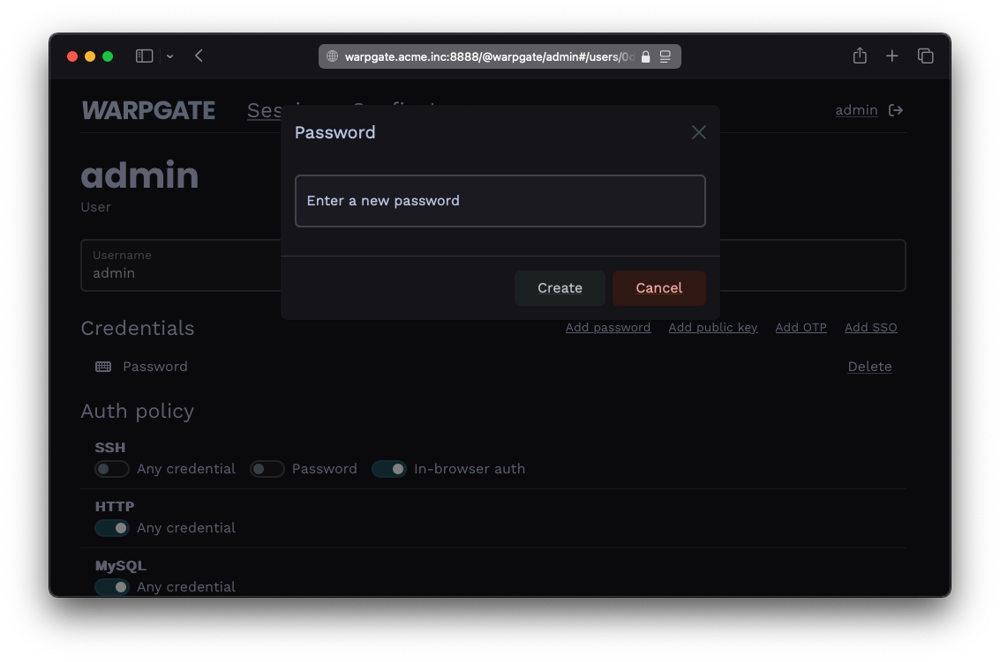
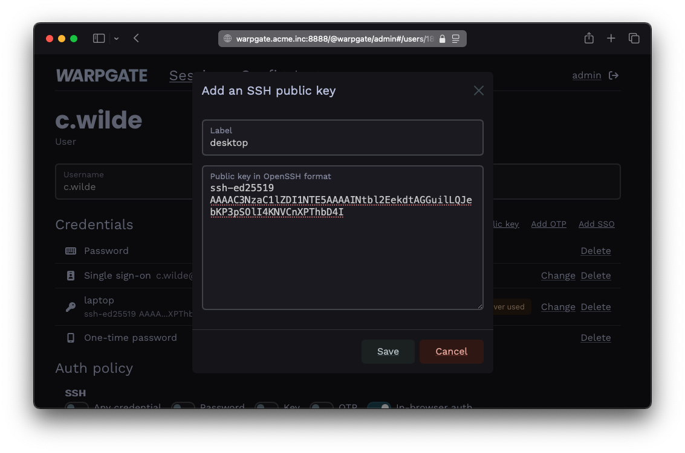
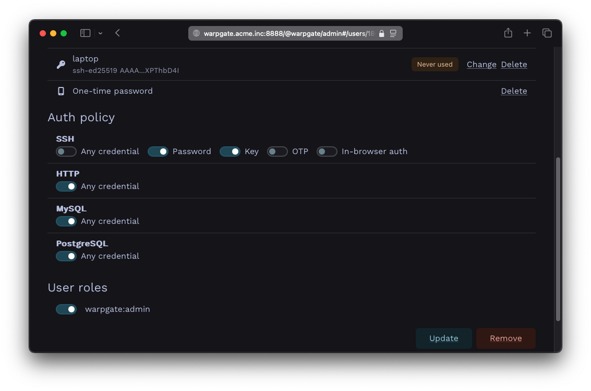

User authentication and roles§
In the previous example, we've reused the Warpgate's admin user, which only had a password as its only way to authenticate. Warpgate supports passwords, public keys, authenticator apps, SSO (OIDC) and combinations thereof as authentication methods.
Changing a user's password§
Log into the Warpgate admin UI and navigate to Config > Users > admin, delete the old password and click Add password to add a new one.

Adding a password
Users can also manage their own password by clicking their username in the top right corner. This can be globally disabled via Config > Global parameter.
Adding a public key for a user§
- Grab the user's public key in OpenSSH format (normally, you can just copy the
~/.ssh/id_<type>.pubfile contents), e.g.:
ssh-ed25519 AAAAC...bD4I user@host
- Click
Add public keyand paste it:

Adding a public key
Requiring multiple authentication factors§
Warpgate can require a client to present both a public key and a password.
- In the
Auth policy>SSHsection, uncheckAny credentialand select bothPasswordandKey:

Setting up a multifactor auth policy
Using roles to assign access§
You can use roles to grant a new user access to multiple targets at once (or assign multiple users to a target).
- Create and remove roles under
Config>Roles. - Assign roles to users and targets on their respective configuration pages.